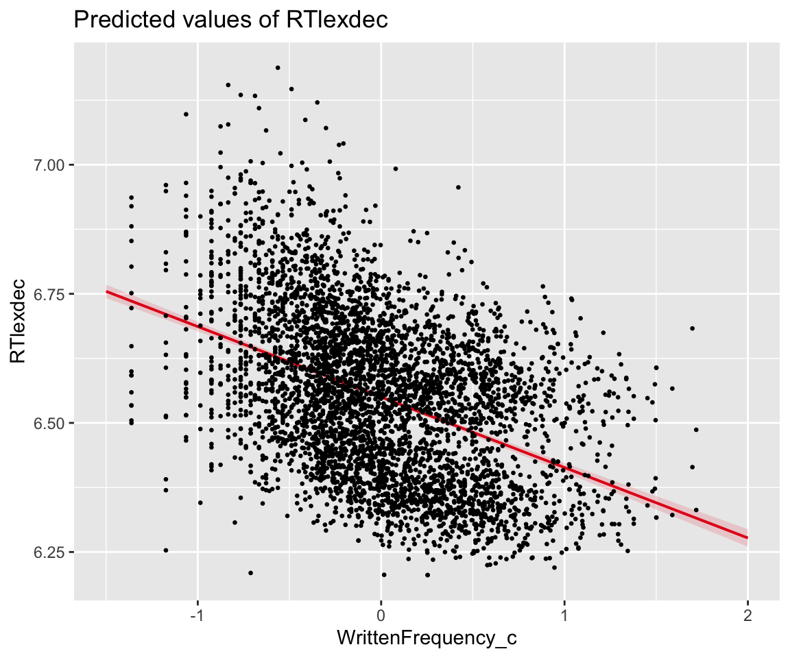
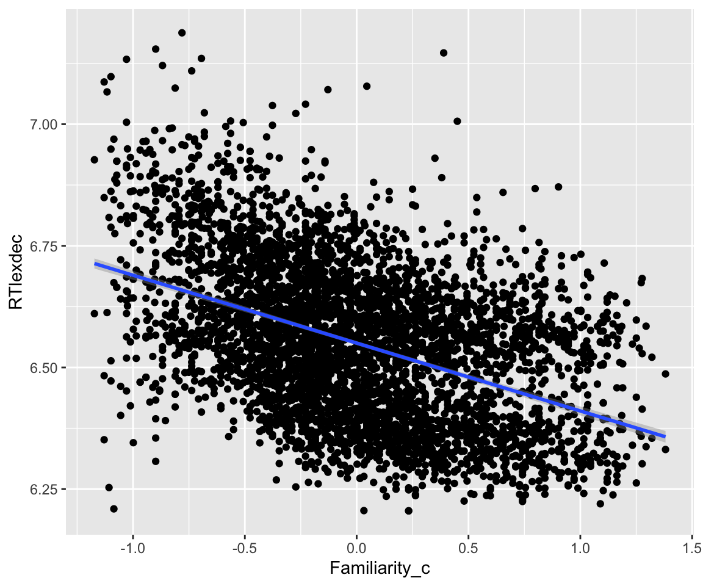
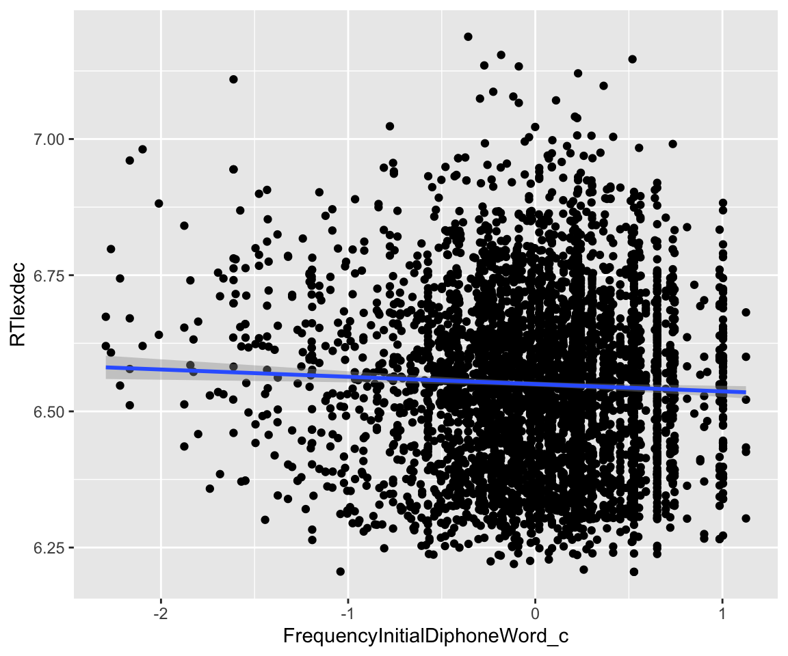
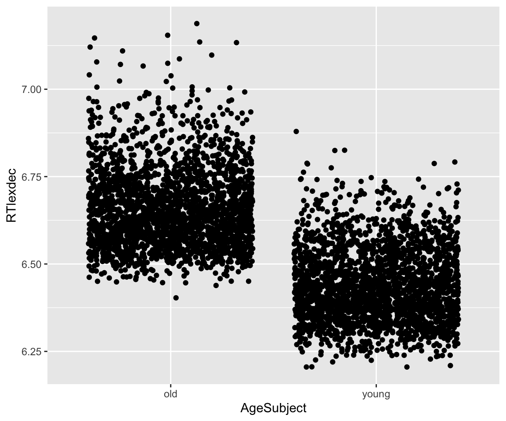
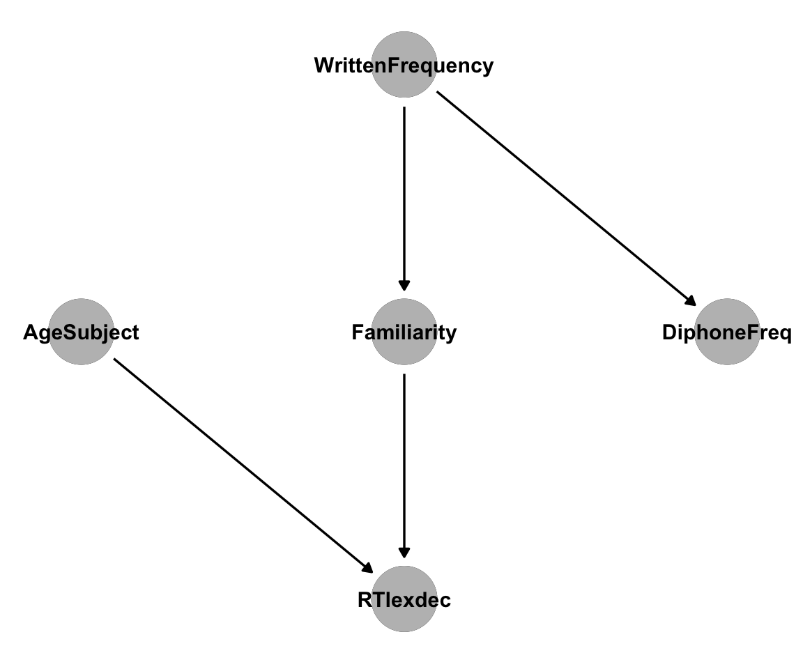
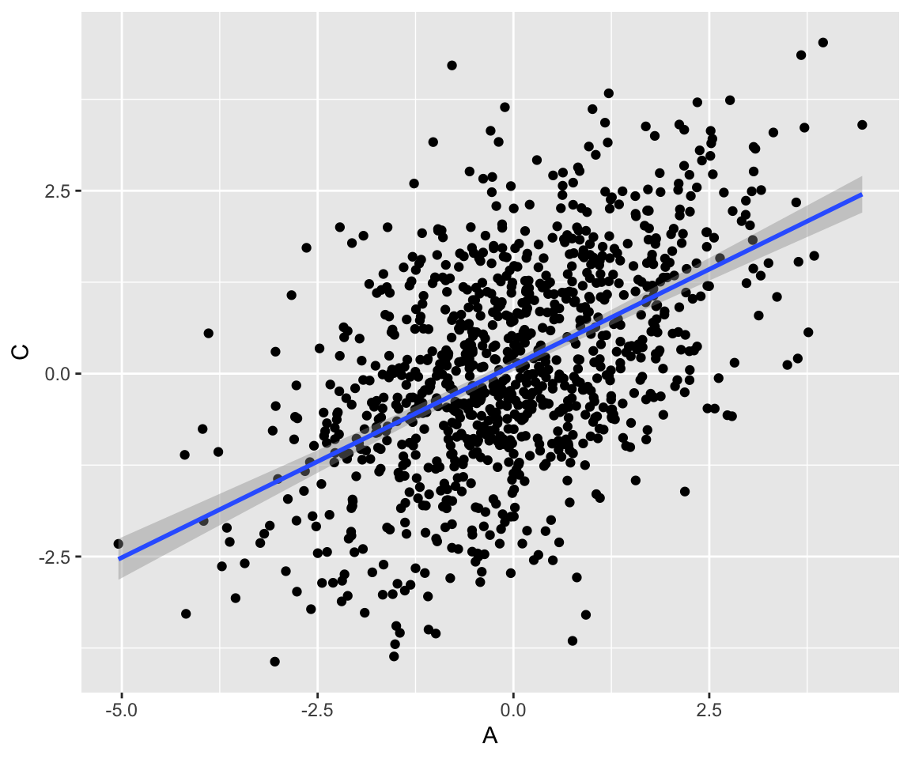
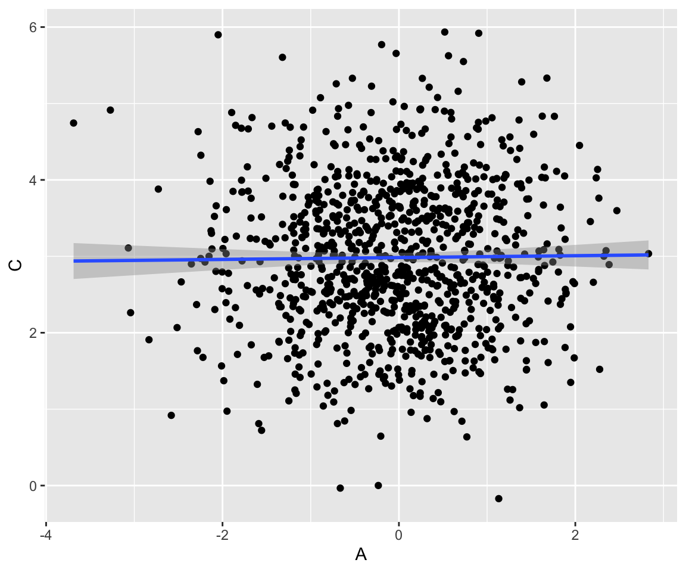
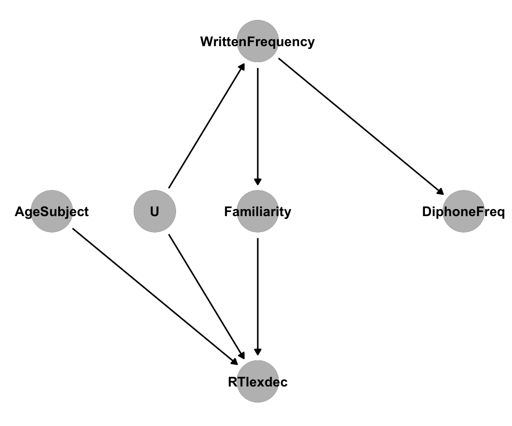
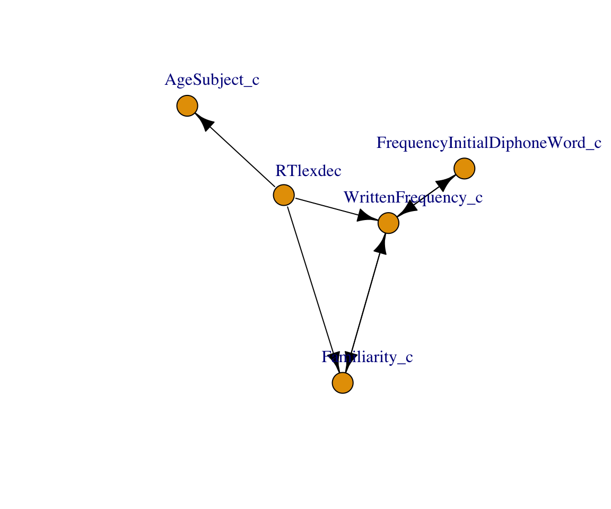

library(lme4)
library(tidyverse)
library(sjPlot)
library(broom)
library(arm)
library(DT)
library(languageR)
library(ggdag)
library(dagitty)
library(pcalg)
library(igraph)14 Causal Inference and Causal Discovery
Author: Amanda Doucette
License: CC-BY-SA-4.0
14.1 Introduction
This tutorial is a brief introduction to causal inference with a focus on how to choose “control variables” in a regression analysis, and a very brief introduction to using causal discovery algorithms to identify causal structure in data.
For more detailed coverage of causal inference, see Rohrer (2018), Pearl (2009), or Hernan and Robins (2024). Malinsky and Danks (2018) provides a good introduction to causal discovery methods.
We’ll be using the following R libraries:
14.2 Data
In this tutorial, we’ll be looking at the english dataset from languageR. To learn more about the dataset, run ?english in R, or see Baayen (2008). To keep things simple, we’ll only use a subset of the variables included in this data:
RTlexdec: Reaction time in a lexical decision taskWrittenFrequency: Log frequency from the CELEX lexical databaseFamiliarity: Subjective familiarity ratingsAgeSubject: Factor with levelsyoungandoldFrequencyInitialDiphoneWord: Log frequency of the initial diphone
Let’s load the dataset and center the predictors:
eng <- english %>%
mutate(
WrittenFrequency_c = rescale(WrittenFrequency),
Familiarity_c = rescale(Familiarity),
FrequencyInitialDiphoneWord_c = rescale(FrequencyInitialDiphoneWord),
AgeSubject_c = as.numeric(AgeSubject) - 1.5
) %>%
dplyr::select(all_of(c(
"RTlexdec", "AgeSubject_c", "AgeSubject",
"WrittenFrequency_c", "Familiarity_c", "FrequencyInitialDiphoneWord_c"
)))14.3 Causal Inference
As linguists, we often want to ask causal research questions: How does variable \(X\) affect outcome \(Y\)? In the english dataset, we may want to ask “How does word frequency affect reaction time in a lexical decision task?” We could fit a simple regression model to estimate the effect of WrittenFrequency on RTlexdec:
eng_m1 <- lm(RTlexdec ~ 1 + WrittenFrequency_c, data = eng)
tidy(eng_m1, conf.int = TRUE)
## # A tibble: 2 × 7
## term estimate std.error statistic p.value conf.low conf.high
## <chr> <dbl> <dbl> <dbl> <dbl> <dbl> <dbl>
## 1 (Intercept) 6.55 0.00209 3133. 0 6.55 6.55
## 2 WrittenFrequency_c -0.136 0.00418 -32.6 4.46e-210 -0.145 -0.128This model tells us that there is a relationship between frequency and reaction time: Reaction times are shorter for more frequent words. But is this effect the same as the causal effect we’re interested in?
14.3.1 What is a causal effect?
Imagine we’re running an experiment to determine how helpful listening to music in a second language is for learning it. We recruit a group of participants taking classes to learn a new language, and divide them into two groups. One, we tell to listen to music in their second language for an hour a day (\(M_i = 1\)). The other, we tell to avoid music in their second language, and continue attending classes as normal (\(M_i = 0\)). Before the experiment, we record each participants scores on a language test (\(X_i\)).
After some time, we administer another test, the outcome of the experiment \(y_i\). For the group who listened to music, we call this outcome \(y_i^1\), and for the group who did not listen to music, we call the outcome \(y_i^0\). For each participant, we can imagine a possible world where they were placed in the other experimental group: For participants in the music-listening group, we can imagine their potential outcome \(y_i^0\) had they been placed in the other group. The causal effect for each participant is the difference between these potential outcomes: \(y_i^1 - y_i^0\).
Of course, we can’t observe these potential outcomes. This is the problem we aim to solve with causal inference.
Our data will look something like this:
| Participant \(i\) | Pre-test \(X_i\) | Group \(M_i\) | \(y_i^0\) | \(y_i^1\) | Causal effect \(y_i^1 - y_i^0\) |
|---|---|---|---|---|---|
| 1 | 53 | 1 | ??? | 72 | ??? |
| 2 | 81 | 0 | 90 | ??? | ??? |
| 3 | 67 | 1 | ??? | 58 | ??? |
| 4 | 40 | 0 | 50 | ??? | ??? |
| 5 | 39 | 1 | ??? | 85 | ??? |
| 6 | 77 | 0 | 78 | ??? | ??? |
There are several ways of getting around this problem. We’ll cover one here: regression.
If we can accurately predict the missing potential outcome for each participant, then we can get a good estimate of the causal effect. In this case, we can be fairly certain that the outcome for each participant was influenced by their prior knowledge of the language. There are many other variables that might predict post-experiment test scores, but for simplicity we’ll assume that prior test scores are the only one that matters. Under this assumption, our outcome variables \(y_i\) are directly caused by both prior test scores \(X_i\) and experimental group \(M_i\). Therefore, we can estimate the causal effect through regression:
\[ y_i = \beta_0 + \beta_1 X_i + \beta_2 M_i \]
The parameter \(\beta_2\) represents the causal effect listening to music on second-language test scores.
14.3.2 What variables do I include in my regression?
“Controlling for” variables in a regression can allow us to estimate causal effects. But in real data, determining which variables need to be controlled for can be challenging.
Consider the english dataset from languageR. For simplicity, we’ll only consider a subset of the variables included in this dataset: RTlexdec, AgeSubject, Familiarity, WrittenFrequency and FrequencyInitialDiphoneWord.
Code
datatable(sample_n(eng, 10))We want to know the effect of WrittenFrequency on RTlexdec. There are several options for which variables to include in a regression:
14.3.2.1 1. Only include the variable of interest.
We only care about the effect of WrittenFrequency, so let’s exclude everything else from our regression:
eng_m2 <- lm(RTlexdec ~ 1 + WrittenFrequency_c, data = eng)
tidy(eng_m2, conf.int = TRUE)
## # A tibble: 2 × 7
## term estimate std.error statistic p.value conf.low conf.high
## <chr> <dbl> <dbl> <dbl> <dbl> <dbl> <dbl>
## 1 (Intercept) 6.55 0.00209 3133. 0 6.55 6.55
## 2 WrittenFrequency_c -0.136 0.00418 -32.6 4.46e-210 -0.145 -0.128We can plot the partial effect of WrittenFrequency against the data. It looks reasonable.
plot_model(eng_m2, type = "pred", terms = "WrittenFrequency_c") +
geom_point(aes(x = WrittenFrequency_c, y = RTlexdec), data = eng, size = 0.5)
14.3.2.2 2. Include everything.
Only including WrittenFrequency in our regression might not be the best choice.
RTlexdec is correlated with Familiarity:
Code
eng %>% ggplot(aes(x = Familiarity_c, y = RTlexdec)) +
geom_point() +
geom_smooth(method = "lm")
And with FrequencyInitialDiphoneWord:
Code
eng %>% ggplot(aes(x = FrequencyInitialDiphoneWord_c, y = RTlexdec)) +
geom_point() +
geom_smooth(method = "lm")
And also with AgeSubject:
Code
eng %>% ggplot(aes(x = AgeSubject, y = RTlexdec)) +
geom_jitter() +
geom_smooth(method = "lm")
All of these variables could reasonably predict RTlexdec, so we could include them in a regression:
eng_m3 <- lm(RTlexdec ~ 1 + WrittenFrequency_c + Familiarity_c + FrequencyInitialDiphoneWord_c + AgeSubject_c, data = eng)
tidy(eng_m3, conf.int = TRUE)
## # A tibble: 5 × 7
## term estimate std.error statistic p.value conf.low conf.high
## <chr> <dbl> <dbl> <dbl> <dbl> <dbl> <dbl>
## 1 (Intercept) 6.55 0.00124 5285. 0 6.55 6.55
## 2 WrittenFrequency_c -0.0700 0.00406 -17.2 1.59e-64 -0.0780 -0.0620
## 3 Familiarity_c -0.0843 0.00405 -20.8 9.77e-92 -0.0922 -0.0763
## 4 FrequencyInitialDiph… 0.00187 0.00249 0.750 4.54e- 1 -0.00302 0.00676
## 5 AgeSubject_c -0.222 0.00248 -89.4 0 -0.227 -0.217In this model, we see a WrittenFrequency effect of -0.07 (95% CI: [-0.08, -0.06]). Like the previous model eng_m2, this is still negative, but much smaller.
14.3.2.3 3. Incude the predictors that perform best under some model comparison procedure.
We could also fit multiple models, compare them, and choose the “best” model in our comparison. Using AIC, we would choose eng_m3, the model with all variables included.
AIC(eng_m2, eng_m3)
## df AIC
## eng_m2 3 -4908.994
## eng_m3 6 -9684.01814.3.2.4 4. Include only the variables needed to make a causal inference.
None of these procedures for choosing a model make any guarantees that the model output will be an estimate of the causal effect. To do this, we need to consider a causal model of the data. If we know that age directly influences reaction times, perhaps it should be included in the model. Written frequency and familiarity essentially represent the same information, so maybe only one should be included. To make this decision, we need to introduce a formal representation of a causal model: the DAG.
14.3.3 Representing causal models with DAGs
We can use a Directed Acyclic Graph (DAG) to represent a causal graph. Vertices in the graph represent random variables, and directed edges (arrows connecting the vertices) represent direct causal relationships. Directed means that edges are arrows in one direction, while acyclic means that there are no cycles in the graph: There is no path from a variable back to itself.
A causal DAG \(X \rightarrow Y\) implies that \(X\) directly causes \(Y\). In other words, if we could experimentally intervene and change the value of \(X\), \(Y\) would change as well. However, if we changed the value of \(Y\), \(X\) would not change.
As linguists, we have some background knowledge about the english dataset, and can represent our intuitions about its causal structure as edges in a DAG. These assumptions might be wrong, but we’ll go with them for now:
AgeSubjectis a direct cause ofRTlexdec: We know that older subjects are generally slightly slower to respond. This adds an arrowAgeSubjext\(\rightarrow\)RTlexdexto our DAG.WrittenFrequencyis a direct cause ofFamiliarity: A person’s subjective familiarity with a word must be strongly influenced by its frequency. This adds an arrowWrittenFrequency\(\rightarrow\)Familiarity.WrittenFrequencyis not a direct cause ofRTlexdec: Participants in the experiment don’t know the actual frequencies of words in the corpus these frequencies were estimated with, they only know their ownFamiliaritywith the words. There is no arrow fromWrittenFrequencytoRTlexdec.WrittenFrequencyis a direct cause ofFrequencyInitialDiphoneWord: The frequency of whole words is likely to have some influence on the frequency of their initial diphones. This adds an arrowWrittenFrequency\(\rightarrow\)FrequencyInitialDiphoneWord.FrequencyInitialDiphoneWordis not a direct cause of anything:AgeSubjectcertainly isn’t caused by initial diphone frequency.Familiaritydepends on knowledge of the whole word, not on any diphone frequency – familiar words can have low-frequency initial diphones.WrittenFrequencycan’t be caused by diphone frequency, because that would add a cycle to our DAG.
This gives us the following causal DAG, which we can plot with dagitty and ggdag:
Code
dag1 <- dagitty('dag{
"DiphoneFreq" [pos="4,2"]
"WrittenFrequency" [pos="3,3"]
"Familiarity" [pos="3,2"]
"RTlexdec" [pos="3,1"]
"AgeSubject" [pos="2,2"]
"DiphoneFreq" <- "WrittenFrequency"
"WrittenFrequency" -> "Familiarity"
"Familiarity" -> "RTlexdec"
"RTlexdec" <- "AgeSubject"
}')
ggdag(dag1) +
theme_dag() +
geom_dag_point(col = "gray") +
geom_dag_text(col = "black")
Causal DAGs can get quite large and complex, but we can break them down into smaller pieces to understand how variables are related. Three common structures have names that are worth knowing:
14.3.3.1 1. Chain: \(A \rightarrow B \rightarrow C\)
A chain implies a causal association between \(A\) and \(C\). This association is mediated by \(B\). Any directed path between two variables in a DAG transmits a causal association. Intervening on \(A\) causes a change in \(B\), which causes a change in \(C\). We can generate a dataset to look at this relationship:
chain <- tibble(
A = rnorm(1000, mean = 0),
B = map_dbl(A, function(i) rnorm(1, mean = i)),
C = map_dbl(B, function(i) rnorm(1, mean = i))
)If we “control for \(B\)” in a regression on this data, the causal effect of \(A\) on \(C\) is masked, even though we know there is a causal relationship. Controlling for \(B\) effectively blocks the association between \(A\) and \(C\):
chain_m1 <- lm(C ~ A + B, data = chain)
tidy(chain_m1, conf.int = TRUE)
## # A tibble: 3 × 7
## term estimate std.error statistic p.value conf.low conf.high
## <chr> <dbl> <dbl> <dbl> <dbl> <dbl> <dbl>
## 1 (Intercept) -0.00840 0.0315 -0.267 7.90e- 1 -0.0702 0.0534
## 2 A -0.0133 0.0426 -0.313 7.54e- 1 -0.0970 0.0703
## 3 B 1.03 0.0306 33.7 5.90e-167 0.971 1.09In a chain, we shouldn’t control for the middle variable \(B\) if we’re intersted in the causal effect of \(A\) on \(C\). Removing \(B\) from our model, we get a correct estimate of the causal effect:
chain_m2 <- lm(C ~ A, data = chain)
tidy(chain_m2, conf.int = TRUE)
## # A tibble: 2 × 7
## term estimate std.error statistic p.value conf.low conf.high
## <chr> <dbl> <dbl> <dbl> <dbl> <dbl> <dbl>
## 1 (Intercept) 0.00822 0.0460 0.178 8.58e- 1 -0.0821 0.0986
## 2 A 0.955 0.0461 20.7 1.32e-79 0.864 1.0514.3.3.2 2. Fork: \(A \leftarrow B \rightarrow C\)
A fork does not imply a causal association between \(A\) and \(C\). Instead, \(A\) and \(C\) share a common cause, \(B\). Because \(A\) and \(C\) share a common cause, there is an association between them, but it is not causal. The causal effect of \(A\) on \(C\) is zero. Here, correlation very much does not imply causation. We can generate a dataset:
fork <- tibble(
B = rnorm(1000, mean = 0),
A = map_dbl(B, function(i) rnorm(1, mean = i)),
C = map_dbl(B, function(i) rnorm(1, mean = i))
)And we can see that \(A\) and \(C\) are correlated, although they are not causally related:
Code
fork %>% ggplot(aes(x = A, y = C)) +
geom_point() +
geom_smooth(method = "lm")
But if we fit a model controlling for \(B\), we can see that \(A\) in fact has no causal effect on \(C\). Again, controlling for \(B\) blocks the association between \(A\) and \(C\). Unlike the previous example of a chain, this is desirable – there is no causal relationship between \(A\) and \(C\), so we want to block the non-causal association induced by \(B\):
fork_m1 <- lm(C ~ A + B, data = fork)
tidy(fork_m1, conf.int = TRUE)
## # A tibble: 3 × 7
## term estimate std.error statistic p.value conf.low conf.high
## <chr> <dbl> <dbl> <dbl> <dbl> <dbl> <dbl>
## 1 (Intercept) 0.0470 0.0326 1.44 1.49e- 1 -0.0169 0.111
## 2 A -0.00669 0.0332 -0.202 8.40e- 1 -0.0718 0.0584
## 3 B 1.02 0.0469 21.8 2.09e-86 0.929 1.11In a fork, the common cause variable is known as a confounder: it can induce spurious correlations and bias measurement of the true causal effect.
14.3.3.3 3. Collider: \(A \rightarrow B \leftarrow C\)
Also known as an inverted fork, a collider does not transmit an association between \(A\) and \(C\). Manipulating \(A\) has no effect on \(C\).
collider <- tibble(
A = rnorm(1000, mean = 0),
C = rnorm(1000, mean = 3),
B = map2_dbl(A, C, function(i, j) rnorm(1, mean = i + j))
)Here, \(A\) and \(C\) are not correlated:
Code
collider %>% ggplot(aes(x = A, y = C)) +
geom_point() +
geom_smooth(method = "lm")
If we include \(B\) in our model, we incorrectly conclude that \(A\) has an effect on \(C\):
collider_m1 <- lm(C ~ A + B, data = collider)
tidy(collider_m1, conf.int = TRUE)
## # A tibble: 3 × 7
## term estimate std.error statistic p.value conf.low conf.high
## <chr> <dbl> <dbl> <dbl> <dbl> <dbl> <dbl>
## 1 (Intercept) 1.55 0.0515 30.0 2.17e-141 1.44 1.65
## 2 A -0.470 0.0275 -17.1 1.80e- 57 -0.524 -0.416
## 3 B 0.483 0.0156 31.0 5.25e-148 0.453 0.514Instead, \(B\) should be excluded from the model:
collider_m2 <- lm(C ~ A, data = collider)
tidy(collider_m2, conf.int = TRUE)
## # A tibble: 2 × 7
## term estimate std.error statistic p.value conf.low conf.high
## <chr> <dbl> <dbl> <dbl> <dbl> <dbl> <dbl>
## 1 (Intercept) 2.98 0.0313 95.4 0 2.92 3.04
## 2 A 0.0122 0.0318 0.385 0.701 -0.0502 0.074614.3.3.4 Confounding and back-door paths
To summarize the above examples in terms of “what to control for”:
- In a chain \(A \rightarrow B \rightarrow C\), controlling for \(B\) blocks the causal association between \(A\) and \(C\), giving us biased causal effect estimate.
- In a fork \(A \leftarrow B \rightarrow C\), controlling for \(B\) blocks the non-causal association, giving us an unbiased causal effect estimate.
- In a collider \(A \rightarrow B \leftarrow C\), controlling for \(B\) unblocks the non-causal association, giving us a biased causal effect estimate.
To estimate a causal effect between two variables, we want to ensure that all causal paths between them are unblocked, while all non-causal paths are blocked. Because forks transmit non-causal associations, any path \(X \leftarrow \dots \rightarrow Y\) needs to be blocked. These paths are also called back-door paths.
A path between two variables \(X\) and \(Y\) is blocked by a set of variables \(\mathbf{Z}\) if and only if:
- It contains a fork \(X \leftarrow W \rightarrow Y\) or a chain \(X \rightarrow W \rightarrow Y\) where the middle variable \(W\) is in the set \(\mathbf{Z}\).
- It contains a collider \(X \rightarrow W \leftarrow Y\) where the middle variable \(W\) or any descendent of it is not in the set \(\mathbf{Z}\).
This is also known as d-separation. A set \(\mathbf{Z}\) d-separates \(X\) and \(Y\) if it blocks every path from \(X\) to \(Y\).
A causal effect is considered identifiable when it is possible to block all back-door paths in the DAG (under the assumption that the DAG is correct).
14.3.4 Causal inference in the english dataset
Going back to our original example of the english data, we can now identify the causal effect of WrittenFrequency on RTlexdec. It turns out to be fairly straightforward.
In our DAG, there is exactly one path between these variables: WrittenFrequency \(\rightarrow\) Familiarity \(\rightarrow\) RTlexdec. This path contains no forks, so it is not a back-door path, and does not need to be blocked to estimate the causal effect.
There are no other paths from WrittenFrequency to RTlexdec, so including any other variables in our regression would only bias our estimate of the effect.
This means we should use our first model, eng_m2, to estimate the causal effect of WrittenFrequency on RTlexdec, although it performed worse in our model comparison. The best causal model is not always the same as the best predictive model: Including Familiarity as a predictor improved the model’s performance under AIC, an estimator of prediction error, but confounded our causal effect estimate1.
14.3.4.1 The causal effect of DiphoneFreq on RTlexdec
Let’s look at a more complicated example. Suppose we want to estimate the causal effect of DiphoneFreq on RTlexdec. While we can manually figure out the backdoor paths in this DAG, you might be dealing with a much larger, interconnected set of variables in the future. Luckily, the dagitty package provides some convenient functions for figuring out the set of variables to control for in estimating a causal effect. To do this, first we input our DAG:2
eng_dag <- dagitty('dag{
"DiphoneFreq" [pos="4,2"]
"WrittenFrequency" [pos="3,3"]
"Familiarity" [pos="3,2"]
"RTlexdec" [pos="3,1"]
"AgeSubject" [pos="2,2"]
"DiphoneFreq" <- "WrittenFrequency"
"WrittenFrequency" -> "Familiarity"
"Familiarity" -> "RTlexdec"
"RTlexdec" <- "AgeSubject"
}')In dagitty (and in much of the causal inference literature), independent variables are referred to as exposure variables, and dependent effects referred to as outcome variables. We can add these to our DAG:
exposures(eng_dag) <- "DiphoneFreq"
outcomes(eng_dag) <- "RTlexdec"While we have been referring to the additional variables in our analysis as control variables, dagitty refers to them as adjustment variables. An adjustment set is a minimal set of variables to control for to determine a causal effect. To calculate this set for our DAG:3
adjustmentSets(eng_dag)
## { Familiarity }
## { WrittenFrequency }This gives us two possible adjustment sets. We can control for either WrittenFrequency or Familiarity to estimate the causal effect of DiphoneFreq on RTlexdec. We can fit both models with lm:
eng_m4 <- lm(RTlexdec ~ 1 + WrittenFrequency_c + FrequencyInitialDiphoneWord_c, data = eng)
tidy(eng_m4, conf.int = TRUE)
## # A tibble: 3 × 7
## term estimate std.error statistic p.value conf.low conf.high
## <chr> <dbl> <dbl> <dbl> <dbl> <dbl> <dbl>
## 1 (Intercept) 6.55 0.00209 3132. 0 6.55 6.55
## 2 WrittenFrequency_c -0.137 0.00421 -32.5 3.00e-208 -0.145 -0.128
## 3 FrequencyInitialDip… 0.00141 0.00421 0.335 7.38e- 1 -0.00684 0.00966eng_m5 <- lm(RTlexdec ~ 1 + Familiarity_c + FrequencyInitialDiphoneWord_c, data = eng)
tidy(eng_m5, conf.int = TRUE)
## # A tibble: 3 × 7
## term estimate std.error statistic p.value conf.low conf.high
## <chr> <dbl> <dbl> <dbl> <dbl> <dbl> <dbl>
## 1 (Intercept) 6.55e+0 0.00208 3149. 0 6.55 6.55
## 2 Familiarity_c -1.39e-1 0.00418 -33.4 1.32e-218 -0.148 -0.131
## 3 FrequencyInitialDip… -6.87e-4 0.00418 -0.164 8.69e- 1 -0.00888 0.00750Whether we control for WrittenFrequency or Familiarity, we get the same result: Initial diphone frequency has no effect on reaction time. This is expected, given our DAG: There is only one path from DiphoneFreq to RTlexdec, and it contains a fork, so we block it to estimate the causal effects. There are no paths left, so we get zero causal effect.
14.3.4.2 The causal effect of AgeSubject on Familiarity
We can estimate the causal effect of age on familiarity in the same way:
exposures(eng_dag) <- "AgeSubject"
outcomes(eng_dag) <- "Familiarity"
adjustmentSets(eng_dag)
## {}In this case, the adjustment set is empty, because RTlexdec is a collider and already blocks the non-causal path between AgeSubject and Familiarity. Next we fit a model with no control variables:
eng_m6 <- lm(Familiarity_c ~ 1 + AgeSubject_c, data = eng)
tidy(eng_m6, conf.int = TRUE)
## # A tibble: 2 × 7
## term estimate std.error statistic p.value conf.low conf.high
## <chr> <dbl> <dbl> <dbl> <dbl> <dbl> <dbl>
## 1 (Intercept) -2.06e-16 0.00740 -2.79e-14 1.000 -0.0145 0.0145
## 2 AgeSubject_c 1.49e-16 0.0148 1.01e-14 1.000 -0.0290 0.0290As we would expect, age has no causal effect on familiarty.
14.3.5 Direct effects and mediation
In a chain such as WrittenFrequency \(\rightarrow\) Familiarity \(\rightarrow\) RTlexdec, the middle variable is known as a mediator. Before, we were interested in how changing WrittenFrequency impacts RTlexdec. This is also called the total effect of WrittenFrequency.
But, knowing that the relationship between WrittenFrequency and RTlexdec is mediated by Familiarity, we may also want to ask a different question: What is the remaining effect of frequency after accounting for familiarity? This is called a direct effect.
dagitty can also tell us what to control for to estimate a direct effect:
adjustmentSets(
eng_dag,
exposure = "WrittenFrequency",
outcome = "RTlexdec",
effect = "direct"
)
## { Familiarity }To answer this question, we can fit a model controlling for familiarity. However, if we look at our DAG, we can see that controlling for Familiarity blocks the only path between WrittenFrequency and RTlexdec. We should see zero direct causal effect.
Let’s fit the model:
eng_m7 <- lm(RTlexdec ~ 1 + WrittenFrequency_c + Familiarity_c, data = eng)
tidy(eng_m7, conf.int = TRUE)
## # A tibble: 3 × 7
## term estimate std.error statistic p.value conf.low conf.high
## <chr> <dbl> <dbl> <dbl> <dbl> <dbl> <dbl>
## 1 (Intercept) 6.55 0.00206 3186. 0 6.55 6.55
## 2 WrittenFrequency_c -0.0698 0.00673 -10.4 5.84e-25 -0.0830 -0.0566
## 3 Familiarity_c -0.0842 0.00673 -12.5 2.10e-35 -0.0974 -0.0710WrittenFrequency still has a negative effect, even after controlling for Familiarity. This result is inconsistent with our DAG. Why? There are multiple possibilities.
14.3.5.1 1. Measurement error
This effect, which was not predicted by our DAG, could be a result of measurement error in the dataset. This seems unlikely here, but is a possibility that should be considered in other datasets.
14.3.5.2 2. An unmeasured confounder
Perhaps our DAG is missing a variable. It is generally a strong assumption that a dataset includes all causally relevant variables. An unmeasured confounder will lead to an unblocked back-door path.
For example, if we add an unmeasured variable to our DAG, it might look like this:
Code
eng_dag2 <- dagitty('dag{
"DiphoneFreq" [pos="4,2"]
"WrittenFrequency" [pos="3,3"]
"Familiarity" [pos="3,2"]
"RTlexdec" [pos="3,1"]
"AgeSubject" [pos="2,2"]
"U" [pos="2.5,2"]
"DiphoneFreq" <- "WrittenFrequency"
"WrittenFrequency" -> "Familiarity"
"Familiarity" -> "RTlexdec"
"RTlexdec" <- "AgeSubject"
"U" -> "WrittenFrequency"
"U" -> "RTlexdec"
}')
ggdag(eng_dag2) +
theme_dag() +
geom_dag_point(col = "gray") +
geom_dag_text(col = "black")
We can get an adjustment set for the direct effect in this new DAG:
adjustmentSets(
eng_dag2,
exposure = "WrittenFrequency",
outcome = "RTlexdec",
effect = "direct"
)
## { Familiarity, U }We need to control for both Familiarity and the unmeasured variable U. We don’t have U in our dataset, so we cannot get an unbiased estimate of the effect if this is the correct DAG.
Unmeasured confounders in general are a problem for causal inference. All of the methods described here assume a causally sufficient set: A set of variables that includes all common causes of all variables in the set. These methods also assume that the DAG being used for your analysis is accurate. If in reality there are missing arrows or incorrect arrows, your causal inference could be wrong.
Subject matter knowledge and experimental evidence can help to verify the correctness of a DAG, but in general it is difficult to know if a causal DAG is 100% correct.
In some cases, you might not even have an idea of how the variables are causally related. To solve this problem, a different set of methods exist to infer causal structure from data.
14.4 Causal Discovery
Causal discovery or causal search is the problem of identifying causal structure from observational data. We won’t go into detail about the algorithms here, but we can use the implementations in the pcalg package on the english data.
We’ll use the PC algorithm4, which is able to identify causal structure up to a Markov equivalence class. A single dataset can correspond to multiple causal DAGs – with the data alone, it is impossible to tell which is correct within an equivalence class. This uncertainty is represented with bidirected edges in the output of the algorithm. A bidirected edge \(X \leftrightarrow Y\) implies that there is no way to distinguish between two possibilities: \(X \rightarrow Y\) and \(X \leftarrow Y\).
The PC algorithm depends on conditional independence tests to determine the existence of edges in the DAG. We’ll use pcalg’s gaussCItest, which assumes our data is normally distributed. We also need to provide the pc function with “sufficient statistics” to conduct the conditional independence tests. In this case, that’s a list including a correlation matrix and the number of variables in our data. We also need to provide a significance level alpha and a list of labels for the variables:
# drop the AgeSubject column that was used for plotting earlier
eng_disc <- eng %>% dplyr::select(-c(AgeSubject))
pc_dag_out <- pc(
suffStat = list(C = cor(eng_disc), n = nrow(eng_disc)),
indepTest = gaussCItest,
labels = colnames(eng_disc),
alpha = 0.01
)
summary(pc_dag_out)
## Object of class 'pcAlgo', from Call:
## pc(suffStat = list(C = cor(eng_disc), n = nrow(eng_disc)), indepTest = gaussCItest,
## alpha = 0.01, labels = colnames(eng_disc))
##
## Nmb. edgetests during skeleton estimation:
## ===========================================
## Max. order of algorithm: 2
## Number of edgetests from m = 0 up to m = 2 : 17 25 6
##
## Graphical properties of skeleton:
## =================================
## Max. number of neighbours: 3 at node(s) 3
## Avg. number of neighbours: 1.4
##
## Adjacency Matrix G:
## RTlexdec AgeSubject_c WrittenFrequency_c
## RTlexdec . . .
## AgeSubject_c 1 . .
## WrittenFrequency_c 1 . .
## Familiarity_c 1 . 1
## FrequencyInitialDiphoneWord_c . . 1
## Familiarity_c FrequencyInitialDiphoneWord_c
## RTlexdec . .
## AgeSubject_c . .
## WrittenFrequency_c 1 1
## Familiarity_c . .
## FrequencyInitialDiphoneWord_c . .The output includes an adjacency matrix, a representation of the edges in the discovered graph. We can plot the graph using the plot function from the igraph package:
# convert the adjacency matrix into an igraph object
pc_dag <- graph_from_adjacency_matrix(as(pc_dag_out, "amat"))
plot(
pc_dag,
layout = layout_nicely,
vertex.label.dist = 3.5,
edge.color = "black"
)
The DAG discovered by the PC algorithm looks similar to the one shown above, with an additional edge between WrittenFrequency and RTlexdec. The PC algorithm cannot identify unmeasured confounders, so it is possible that there is an unmeasured variable between these variables. We also see uncertainty in edge direction: There are bidirected edges, and edges implying that RTlexdec causes age, familiarity, and frequency. We were able to find a reasonable skeleton for the DAG, but not edge directions. Other causal discovery algorithms exist, some of which can identify unmeasured confounders.
See Arif and MacNeil (2022) for more discussion of predictive and causal models, written for ecologists.↩︎
The
[pos=x,y]indicators are completely optional, and are only used to provide a better layout for graphing functions.↩︎Also possible:
adjustmentSets(eng_dag, exposure = "DiphoneFreq", outcome = "RTlexdec")↩︎named for its creators, Peter Spirtes and Clark Glymour↩︎